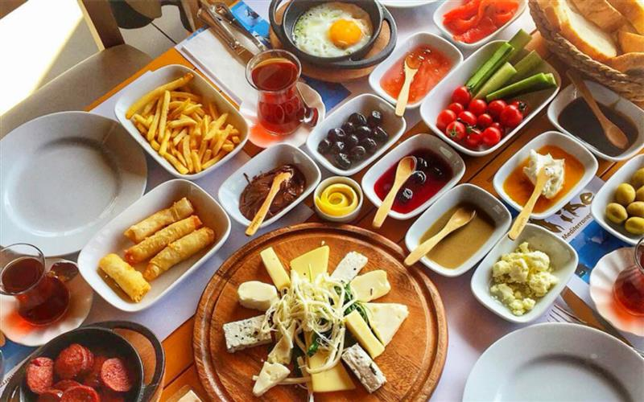
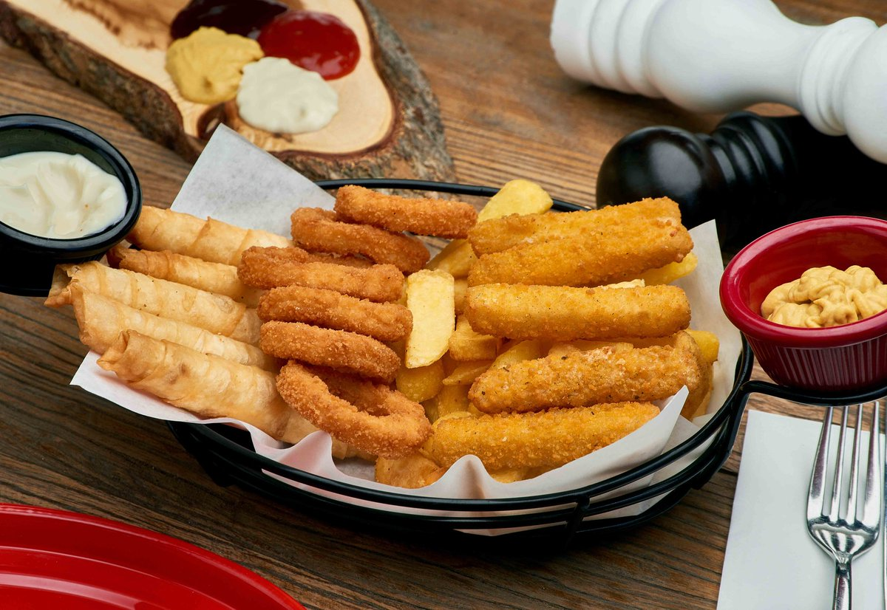
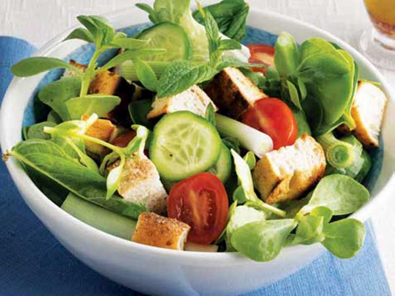
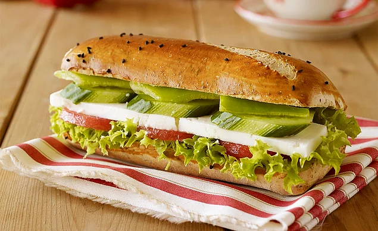
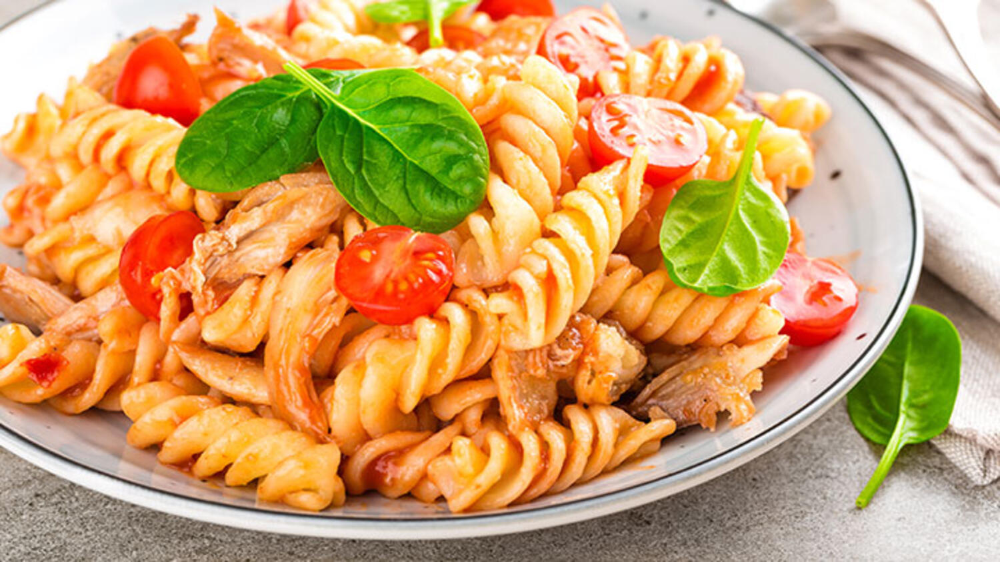
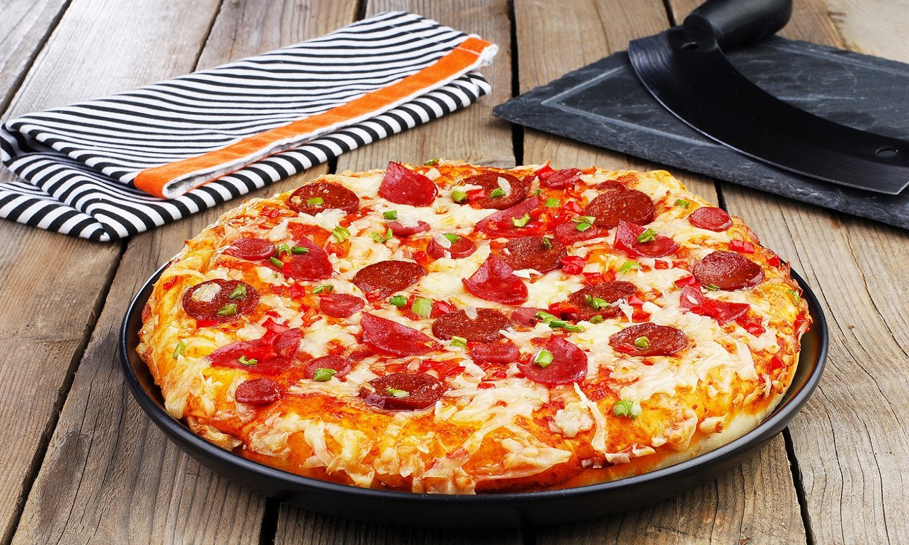
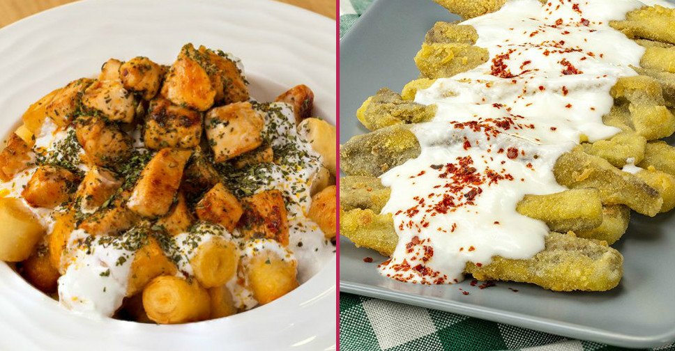
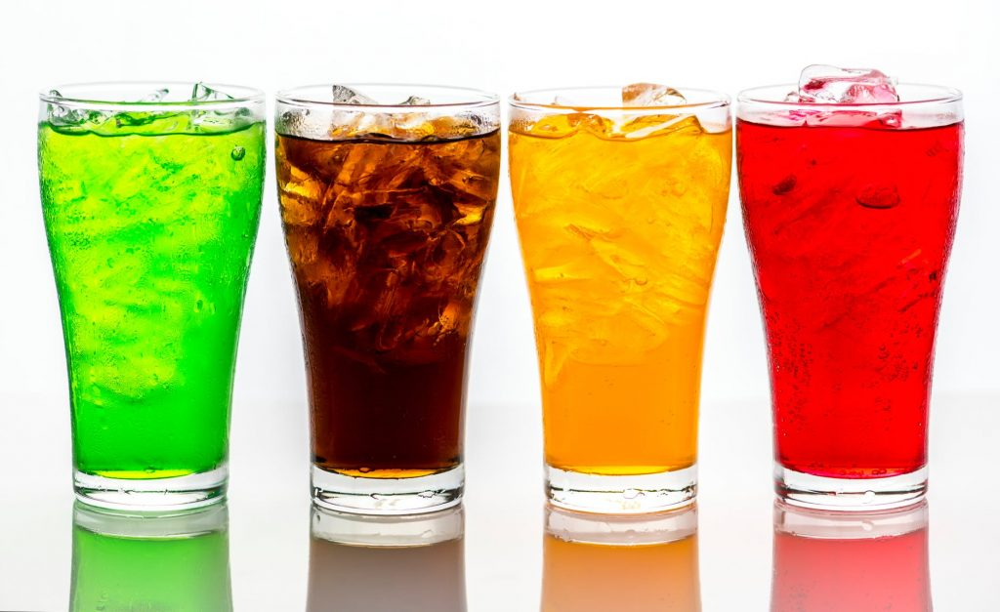

Menüler
Çeşitlerimiz

KAHVALTILAR
Serpme Kahvaltı
Beyaz Peynir, Süzme Peynir, Tulum Peyniri, Taze Kaşar, Salam, Siyah Zeytin, Yeşil Zeytin, Biberli Zeytin, Sucuklu Yumurta, Menemen, Patetes Cipsi, Sosis Tava, Domates Söğüş, Bal, Kaymak, Reçel, Helva, Açma, Simit, Poğaça, Sınırsız Ekmek, Sınırsız ÇayAçık Büfe
Beyaz Beynir- Acılı Ezme- Kaşar Peyniri, Çeçil Peyniri- İtalyan Salatası- Sigara Böreği, Dana Jambon- Yumurta Salatası- Poğaça, Salam – Zeytin Salatası, Kaymak- Kuru Biber Dolma, Kakao Helva- Haydari, Tahin Pekmezi- Yoğurtlu Biber Kızartması, İncir Reçeli- Ezme, Sınırsız Ekmek, Sınırsız Çay

ATIŞTIRMALIKLAR
Sıcak Tabağı
Sigara böreği, soğan halkası, nugget, kroket, sosis, patates kızartması ve sosları ile servis edilir.Köfte Ekmek
Türk usülü el yapımı köfte.Çıtır Tavuk
Panelenmiş tavuk göğsü,Patates kızartması ile servis edilir.Sigara Böreği
8 adetNugget
....Soğan Hallkası
10 adet

SALATALAR
Ton Balıklı Salata
Ton balığı,roka, soğan ve çeri domatesi.Sezar Salata
Ton balığı,roka, soğan ve çeri domatesi.Akdeniz Salatası
Iceberg, roka, maydonoz, nane, beyaz peynir, çeri domates, salatalık, zeytin, mısır.Bahçe Salatası
Mevsim yeşillikleri, Havuç, LolorossoÇoban Salatası
Kuru Soğan, Salatalık, Domates, Sivri Biber, Limosuyu, Maydanoz, Zeytin Yağı

Taze Kaşar, Macar Salamı, Eski Kaşar, Dilim Sucuk, Turşu
SANDVİÇLER
Tost Ekmeği
Taze Kaşar, Macar Salamı, Eski Kaşar, Dilim Sucuk, Turşu
Simit
Yumurta, Beyaz Peynir, Sucuk, DereotuSomun Ekmek
Köfte, Acı Biber Salçası, Salatalık Turşu, Göbek SalataBaget Ekmek
Tavuk, Rokfor Peyniri, Mayonez, Yaban Mersini

MAKARNALAR
Napoliten
Domates Sos, Maydanoz, Parmesan PeyniriBolanez
Domates Sos, Havuç, Biber, Soğan, Kıyma, Maydanoz, Parmesan PeyniriTon Balıklı
Domates Sos, Ton Balığı, Özel Baharatlar, Maydanoz, Kapari, Permasan PeyniriKremalı Tavuklu
Domates Sos, Krema,Marinatlı Tavuk Şeritleri, Özel Baharatlar, Maydonoz, Permasan Peyniri

PİZZALAR
Anadolu Pizza
Domates sos üzerine; çemenli pastırma, kavurma, baharatlı dana sucuk, domates, yeşil biber ve mozzarella peyniri ileMargarita Pizza
Domates sos üzerine; mozzarella peyniri, Mado keçi peyniri ve roka yaprakları ileTrio Pizza
Mozzarella peyniri, domates sosu, zeytin, salam, sucuk, sosis, yeşilbiber, kırmızıbiber, mantar, mısır, kekik

ANA YEMEKLER
Saç Tava
Kuşbaşı dana eti, biber,sarımsak, domates.Izgara Köfte
El yapımı özel köfte, tortilla ekmeği, soğan. Barbekü sos ve patates kızarması eşliğinde.Tavuk Fajita
Tavuk, mantar, kırmızı ve yeşil biber, kaşar peyniri,Tavuk Wrap
Tavuk, mantar, kırmızı ve yeşil biber, sarımsak, domates, soya sos, kaşar peyniri.
TATLILAR
Mozaik Pasta
...Choco Waffle
El yapımı waffle,çilek,muz,kivi,çikolata ve dondurma eşliğinde.Fıstık Rüyası
...Cheese Cake Çeşitleri
Limonlu ya da Frambuazlı tercih edilebilir.SICAK İÇECEKLER
Çay
Fincan Çay
Fincan ÇayNescafe Black
Nescafe White
Süt BazlıBallı Süt
Sahlep
